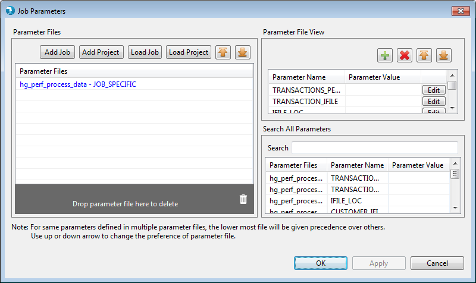
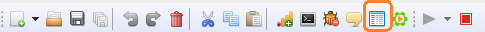

Parameter Grid
The Parameter Grid provides the user with option to edit/add new parameters to the job.
All the parameters that have been created or used in the job within component properties, get displayed in the parameter grid. The user can add additional parameters using the add(+) button on the parameter grid
The parameter grid displays the name of the parameters and allows user to edit/add values to them. Parameter names present in the job appear disabled for delete operation. If a parameter is not in use within the job components, option to delete it gets enabled. Also, additional parameters added using the grid add(+) option appear enabled for delete as long as they are not used in the job.
On saving the job, the parameters are saved into a properties file that get saved under the "param" folder

For same parameters defined in multiple parameter files, the lower most file will be given precendence over others. Use up or down arrow to change the preference of parameter file
User can also import a properties file browsing the file system into the parameter grid.
Option to edit the Parameter Grid is present in the tool bar. Also, the Parameter grid opens up when user runs the job using the Run button.
